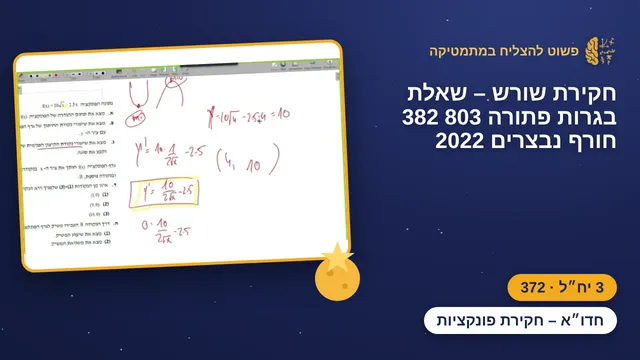
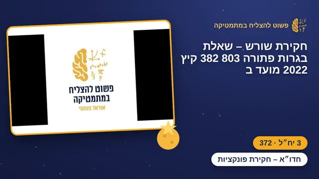

פשוט להצליח במתמטיקה › בחינות בגרות › שאלון 35372 › קיץ מועד ב 2026
בגרות 35372 – קיץ מועד ב 2026
בחינת הבגרות במתמטיקה 35372 (3 יח״ל, שאלון שלישי, כיתה י״ב) – קיץ מועד ב 2026 תשפ״ו. כאן השאלון המקורי והפתרון הרשמי של משרד החינוך, וסרטוני הסבר על הנושאים שמופיעים בשאלון.
רוצים לעקוב אחרי ההתקדמות?נרשמים בחינם, וכל סרטון שראיתם מסומן ✓. ממשיכים מכל מכשיר.
הצטרפות בחינם ←סרטוני הסבר לפי הנושאים בשאלון 35372
מודלים ופונקציות מודל ריבועי, חדו"א
 פונקציית פולינום עם משיקים – שאלה בסיסית וטובה 3 4 5 יח
פונקציית פולינום עם משיקים – שאלה בסיסית וטובה 3 4 5 יח
חקירת שורש – שאלת בגרות פתורה 803 382 חורף נבצרים 2022
חקירת שורש – שאלת בגרות פתורה 803 382 קיץ 2022 מועד ב חקירת שורש – שאלת בגרות פתורה 803 382 (2)
חקירת שורש – שאלת בגרות פתורה 803 382 (2)